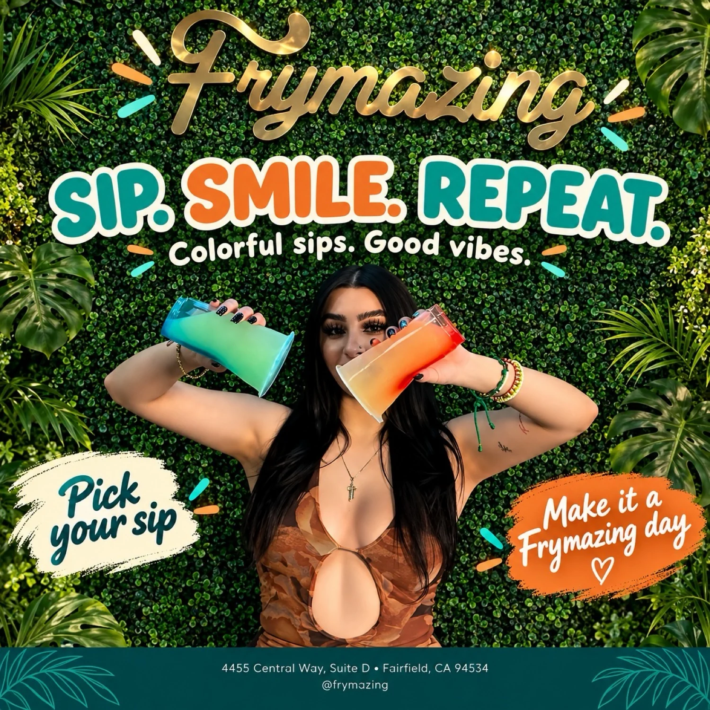
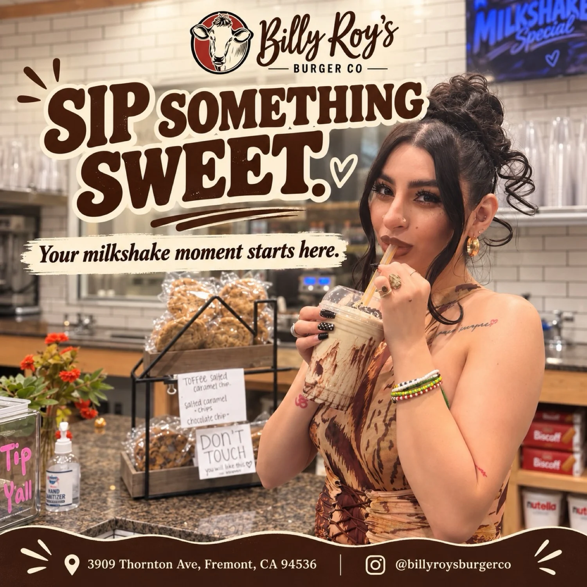

Portfolio
Selected Work
Hotels, restaurants & houses of style. Has modeled for hospitality brands.
San Francisco Bay Area hotel, dining and lifestyle brand features
Hilton Garden Inn
Arrival, room reveal and dining — a full stay told in a single vertical cut.

Hilton Garden Inn
“Sip. Relax. Stay awhile.” — a poolside hotel-stay story built around slow moments.

Fogão Gaúcho
“Make tonight unforgettable.” — a candlelit churrascaria evening against the wine wall.

Sushi Tsunami
“Sushi night done right.” — an all-you-can-eat table styled as a night out.

Billy Roy’s
“Good food. Great company.” — burgers and drinks with a glam point of view.

Gusto al Gusto
A styled look against the restaurant’s signature arch — fashion meets place.

Mrs. Ramen
“Your next craving starts here.” — a bold, playful street-food story.

Frymazing
“Sip. Smile. Repeat.” — colorful sips styled for carousel and Reel.

Billy Roy’s
“Sip something sweet.” — a milkshake moment, shot to stop the scroll.
A private stay
Forthcoming · 2027
The next house
A forthcoming feature, unveiled on release.
Campaign performance and partner references are shared privately with qualified inquiries.